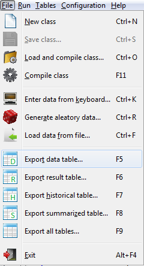
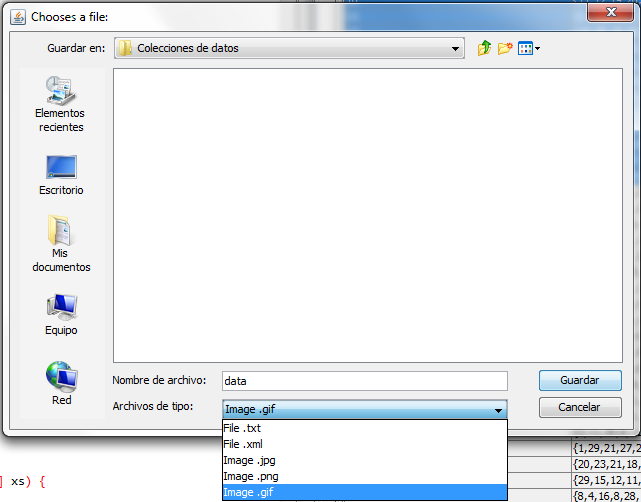
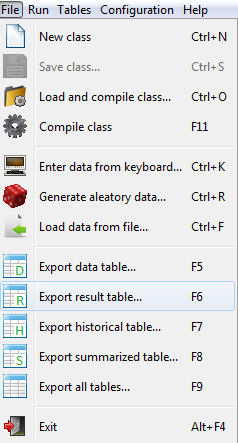
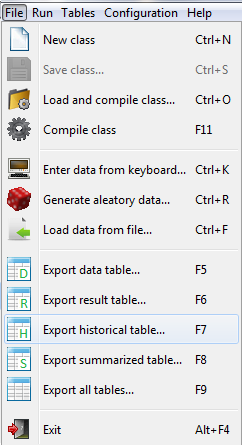
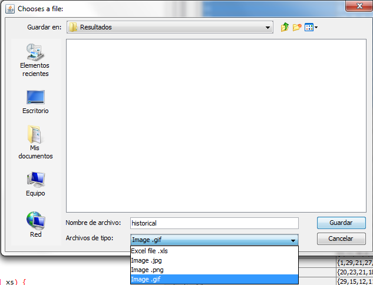
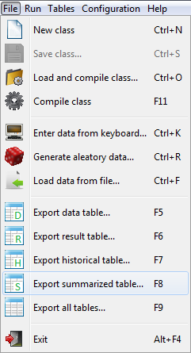
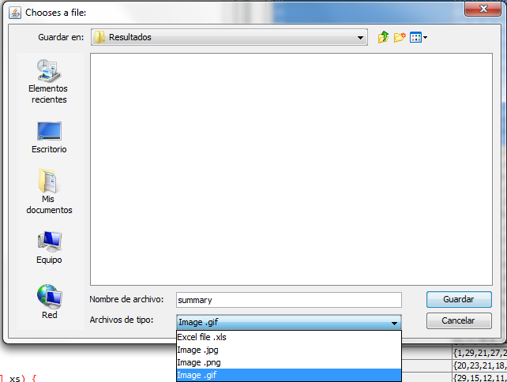
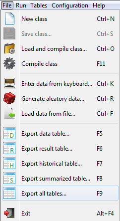
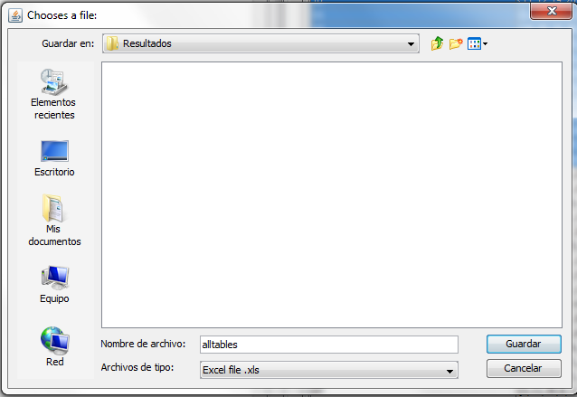

return
Export tables
Export data table
Select from the menu bar.

Then, enter the name of the file in which to save the data and click Save to complete the operation.

Nota:
Data files are .xml files whose format is shown in Format files section.
Export Table to results
Select from the menu bar.

Enter the name of the file in which to save the result of the execution,
click Save to complete the operation.
Note:
Output files are excel files whose format is described in section Format files.
Export historical table
Select from the menu bar.

Enter the name of the file in which to save the results of the executions,

click Save to complete the operation.
Note:
Output files are excel files whose format is described in section Format files.
Export summarized table
Select from the menu bar.

Enter the name of the file in which to save the percentages of optimality of the methods,

click Save to complete the operation.
Note:
Output files are excel files whose format is described in section Format files.
Export all tables
Select from the menu bar.

Enter the name of the excel file in which to save the tables,

click Save to complete the operation.
Note:
Output files are excel files whose format is described in section Format files.
September 16, 2016